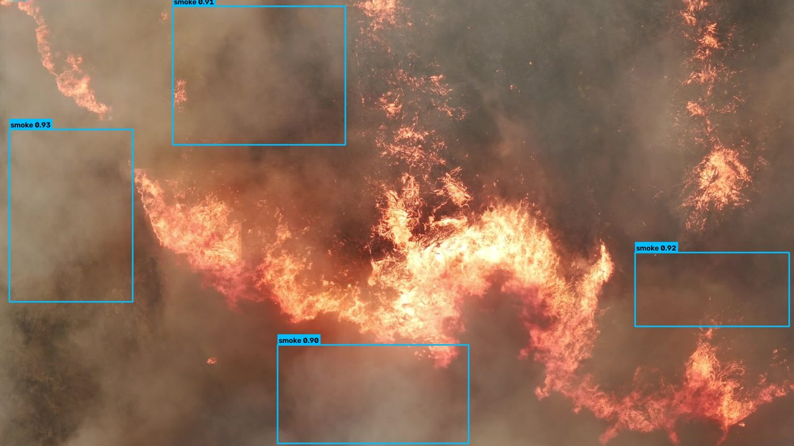

VC TECH INTERNSHIP · JUL 2026
Smoke detection on Raspberry Pi 5 + Hailo-8L
Trained a YOLOv8n model on merged public datasets (D-Fire and FireAndSmoke), using 32,804 training images, and reached 0.832 mAP50 for smoke on the D-Fire test split. Converted it to Hailo's .hef format with INT8 quantization (1,024-image calibration set) and deployed it on a Raspberry Pi 5, measuring 107 FPS on-device.
Validated on unseen 4K smoke videos (99–100% hit rate at a 0.25 confidence threshold) and documented how detection rates change at stricter thresholds.
The model also has a fire class. It is weaker than smoke (0.707 mAP50), and I did not get to fine-tune it before the internship ended. A campfire triggers a false positive at 0.52 confidence, which is listed in the README.
YOLOv8nINT8 quantizationHailo-8LRaspberry Pi 5